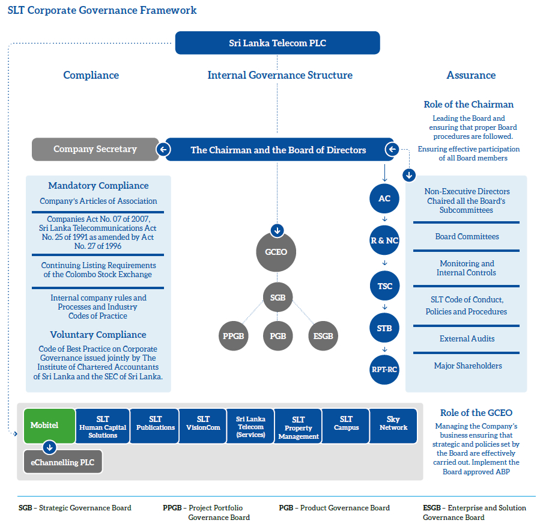
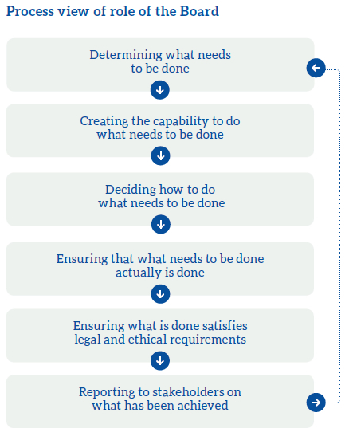

The purpose of corporate governance is to facilitate effective, entrepreneurial and prudent management that can deliver the long-term success of a company. It involves a framework of legislation, codes and voluntary practices.
A key element is protecting the interests of shareholders where they are distant from the Directors running a company. It also involves paying attention to the interests of employees, customers, suppliers with a direct interest in the performance of a company.
The Board of Directors of Sri Lanka Telecom PLC (‘SLT’) firmly believes that good corporate governance is critical to the sustainability of the Company’s long-term success. The Directors facilitate and enable the responses that are required to cope with multiple threats and opportunities and ensure compliance with relevant laws, regulations, codes, corporate guidelines and policies, and listing and other requirements.
The aim of this Report is to inform the specific aspects of SLT’s corporate governance which help to ensure long-term success of the Company and provide confidence that the Company is being well run and support better access to the external finance and investment.
SLT’s corporate governance philosophy practiced is in full compliance with the following frameworks of legislation, codes and voluntary practices:
- Articles of Association (‘AoA’) of the Company
- Legislation, particularly the Companies Act No. 07 of 2007, Telecommunications Act No. 25 of 1991 as amended by Act No. 27 of 1996
- Continuing Listing Requirements of the Colombo Stock Exchange
- Internal Company rules and processes and industry codes of practice
- Code of Best Practice on Corporate Governance issued jointly by The Institute of Chartered Accountants of Sri Lanka and the Securities and Exchange Commission of Sri Lanka.

The Board of Directors
Composition of the Board
The Board comprised nine Non-Executive Directors with seven of them being Independent. The independence of the Directors has been determined in accordance with the requirements of the CSE Listing Rules. The Board strives to provide strategic leadership within the business environment.

Ownership and Directors
As per the shareholding structure of the Company, two major shareholders namely the Government of Sri Lanka acting through the Secretary to the Treasury and the Global Telecommunication Holdings NV recommend five and four Directors respectively to the Board. The Board as empowered by the AoA of the Company appoints them to the Board filling the casual vacancies after deliberation of their qualifications, experience and expertise in relevant functional areas by the R&NC. However, all Directors are required by the Company’s AoA to be elected by shareholders at the first AGM after their appointment, if appointed by the Board. A Director must also retire by rotation and may seek re-election at the AGM if he or she was last elected or re-elected at or before the AGM held in the third year before the year in question.
The role of the Board
The Board is responsible for the overall conduct of the Group’s business and has the power, authority and duties vested in it by and pursuant to the relevant laws of the Country and the AoA of the Company.
The Board:
- establish vision, mission, values, objectives and policies
- sets businesses, financial directions and strategy
- ensures appropriate structure/capability
- delegates to management and control
- is accountable to shareholders for the proper conduct of the business

Other specific responsibilities are delegated to Board Committees which operate within clearly defined Terms of Reference. Details of the responsibilities and operations of the Subcommittees are given in this Annual Report.
Operation of the Board
The Board met five times during the year. These meetings, together with Committee meetings, are generally held within a period of three to four days according to the annual meeting calendar which is agreed by all the Directors. The meetings focus on the overall strategic direction, development and control of the Company.
The Chairman, along with the Group Chief Executive Officer (‘GCEO’) and the Company Secretary, ensures that the Board functions effectively and has established Board processes designed to maximise its performance and effectiveness.
Key aspects of these processes are:
- All Directors receive appropriate and timely information in order to ensure informed deliberation and effective decision-making. Briefing papers are distributed by the Company Secretary to all Directors usually four working days prior to the Board and Committee meetings. The Board papers are made available in electronic format keeping in line with the Group’s sustainability initiatives.
- The GCEO along with the respective Chief Officers and the Heads of Divisions present their submissions to the Board and provide the necessary clarifications requested by the Board. The Board, once satisfied with the recommendations made by the management approves the proposals.
- The Board has a procedure for Directors, in furtherance of their duties, to take independent professional advice if necessary, at the Company’s expense. In addition, all Directors have access to the advice and services of the Secretary, who advises the Board on appropriate procedures for the management of its meetings and their duties, as well as the implementation of corporate governance and compliance with the requirement of the Companies Act, CSE Listing Rules and the Articles of Association of the Company.
The attendance of individual Directors at Board meetings and Committee meetings during the year is set out in the table below:
Board and subcommittee meeting attendance
| Meetings attended as a percentage | ||||||||
| Board member | Status | Board | Audit Committee | Remuneration & Nomination Committee | Technology Subcommittee | Senior Tender Board | Related Party Transactions Review Committee | Risk Management Committee |
| Mr Kumarasinghe Sirisena – Chairman | INED | 5/5 | – | 5/5 | – | – | – | – |
| Mr Chan Chee Beng | NED | 5/5 | 2/5 | 3/4 | – | – | 2/4 | – |
| Mr Jeffrey Jay Blatt (Resigned w.e.f. 31 August 2016) | INED | 3/4 | – | 3/4 | 3/4 | 3/4 | – | 3/4 |
| Mr Lawrence Michael Paratz | INED | 5/5 | – | 2/2 | 5/5 | 5/5 | – | 5/5 |
| Ms Lai Choon Foong | INED | 5/5 | 5/5 | – | – | 5/5 | 4/4 | 5/5 |
| Ms Chandra Ekanayake | NED | 5/5 | 5/5 | – | – | – | 4/4 | 5/5 |
| Ms Nilanthi Pieris | INED | 5/5 | 5/5 | – | – | 5/5 | 4/4 | – |
| Mr W K H Wegapitiya | INED | 5/5 | – | – | 2/4 | 0/4 | – | 0/4 |
| Mr Rohan De Silva | INED | 5/5 | – | – | 3/4 | 2/4 | – | 2/4 |
NED: Non-Executive Director
INED: Independent Non-Executive Director
Delegation to Board Subcommittees
SLT has in place a number of mandatory and voluntary Board Subcommittees to fulfil regulatory requirements and for better governance of its activities. These Committees comprise Directors who can bring their expertise and experience to the assigned Committees and the duties are set out in formal Terms of Reference which is available for inspection at the Company’s registered office during normal business hours.
The Committees meet regularly to consider and discuss matters falling within its authority and accountability specified in Terms of Reference and their observations and recommendations are regularly reported to the Board.
| Committee | Composition and role | Meeting frequency |
| Audit Committee |
The Audit Committee (‘AC’) comprise Non-Executive Directors majority of whom are independent. The Chairman and a member of the Committee are members of recognised accounting bodies. The members of the Committee are: Mr Chan Chee Beng – Chairman Ms Lai Choon Foong Ms Chandra Ekanayake Ms Nilanthi Pieris Mr Rohan De Silva (Appointed w.e.f. 15 February 2017) The GCEO, Chief Financial Officer and Chief Internal Auditor attend the meetings by invitation. The Board through delegation to the AC ensures the integrity of the Company’s financial reporting effective system of Group’s internal controls and conducts risk identification assessment and mitigation. The Board regularly reviews the effectiveness of the Group’s internal controls, which have been in place from the commencement of the year to the date of approval of this Report, and believes that it is in accordance with the laws and regulations and the established policies and procedures of the Group. The AC report on pages 116 to 118 of the Annual Report sets out in more detail the Committee’s policies, practices and areas of focus. |
A minimum of four meetings per annum and at such other times as the Chairman of the Committee shall require |
| Remuneration and Nomination Committee |
The Remuneration and Nomination Committee (‘R&NC’) comprises Non-Executive Directors majority of whom are independent. The members of the Committee are: Mr Chan Chee Beng – Chairman (Appointed as Chairman w.e.f. 3 November 2016) Mr Jeffrey Jay Blatt – Chairman (Resigned w.e.f. 31 August 2016) Mr Kumarasinghe Sirisena Mr Lawrence Paratz – (Appointed w.e.f. 3 November 2016) The GCEO attends meetings by invitation, except when his own remuneration package is being discussed. The activities of the R&NC include nomination, selection and appointment of Non-Executive Directors, GCEO and key senior officers, succession planning for the GCEO and senior management and reviewing the composition of the Board, particularly in relation to the diversity of background, skills and experience. It also provides support and guidance with regard to the Group’s policy for determining the fees for Non-Executive Directors and remuneration of GCEO, CEOs of subsidiary companies and senior management. |
Once a year and at such other times as the Chairman of the Committee shall require |
| Related Party Transactions Review Committee |
In compliance with the requirements of the Listing Rules, the Board at its meeting held in February 2016 appointed the Related Party Transactions Review Committee (‘RPT – RC’) comprising Non-Executive Directors of whom two Directors were independent. The Chairman of the Committee is an Independent Director. The members of the Committee are: Ms Nilanthi Pieris – Chairperson Mr Chan Chee Beng Ms Lai Choon Foong Ms Chandra Ekanayake The objective of the RPT – RC is to ensure that the interest of shareholders are taken into account when entering into related party transactions and to enhance corporate transparency and promote fair transactions between SLT, its subsidiaries and other related parties. The related party relationship with its subsidiaries is disclosed in the Notes to the Financial Statements. However, the Board believes that those transactions are exempted in accordance with the exceptions specified in the Code of Best Practices on Related Party Transactions issued by the CSE. |
A minimum of four meetings per annum and at such other times as the Chairman of the Committee shall require |
| Risk Management Committee |
The Risk Management Committee (‘RMC’) comprises Non-Executive Directors The members of the Committee are: Mr Jeffrey Jay Blatt – Chairman (Resigned w.e.f. 31 August 2016) Mr Lawrence Paratz Ms Chandra Ekanayake Ms Lai Choon Foong Mr W K H Wegapitiya Mr Rohan De Silva The Risk Management Committee is responsible for identifying, evaluating and reporting on the Group’s risks and to recommend mitigation strategies and plans to the Board. The Board has established a continuous process for identifying, evaluating and managing the significant risks faced by the Group. Following a review by the AC and the Board, the Risk Management Committee was folded into the Audit Committee to enhance the effectiveness of risk management and governance. |
A minimum of four meetings per annum and at such other times as the Chairman of the Committee shall require |
| Technology Subcommittee |
The Technology Subcommittee (‘TSC’) comprises Independent Non-Executive Directors. The members of the Committee are: Mr Lawrence Paratz – Chairman Mr Jeffrey Jay Blatt (Resigned w.e.f. 31 August 2016) Mr W K H Wegapitiya Mr Rohan De Silva The TSC comprises Directors with technical expertise who are assigned the task of studying available technology and providing a platform for engaging in intense technical discussions and looking at road maps with a long-term perspective. GCEO and senior management members of SLT and Mobitel attend meetings of the TSC as permanent members in order to maintain Group synergies when major decisions are made. If required, the CEOs of subsidiary companies too are invited to attend meetings. Therefore, TSC primarily focuses on best strategies to increase organisational efficiencies; support the advancement of professional staff capabilities and develop a flexible delivery system to effectively respond to new technological advances and information. It is also the responsibility of the Committee to review the existence and appropriateness of plans and processes, planned and achieved network performance and methods of assessment and the Company’s technology, people and skill plans and their implementation. |
As and when required |
| Senior Tender Board |
The Senior Tender Board (‘STB’) comprises Non-Executive Directors. The members of the Committee are: Mr Jeffrey Jay Blatt – Chairman (Resigned w.e.f. 31 August 2016) Ms Lai Choon Foong (Appointed as Chairperson w.e.f. 3 November 2016) Mr Lawrence Paratz Mr W K H Wegapitiya Ms Nilanthi Pieris Mr Rohan De Silva The GCEO and the CFO are appointed to the Committee by the Board to review the Group procurement needs. The procurement function involves a standard procurement process approved by the Board where, all common procurement processes are consolidated at the Group level for SLT and its subsidiaries. Therefore in order to increase efficiencies and reduce risk, the Board has delegated the approval limits for procurement as follows: Board of Directors – Value exceeding Rs. 50 million Senior Tender Board – Value between Rs. 25 million and Rs. 50 million Junior Tender Board – Value less than Rs. 25 million |
Prior to every Board meeting |
Independence of Directors and segregation of duties
Non-Executive Directors are not members of management and are free of any business or other relationship that could materially interfere with – or could reasonably be perceived to interfere with the independent exercise of their judgment. They do not hold shares in the Company and have not worked in an executive capacity for the Company or any of Subsidiaries of the Company.
Their biographies of this Annual Report demonstrate a range of experience and sufficient calibre to bring the independent judgment on issues of strategy, performance, resources and standards of conduct which is vital to the Group.
Indemnities to Directors
In accordance with the AoA of the Company, Directors are granted an indemnity from the Company to the extent permitted by law in respect of liabilities incurred as a result of the performance of their duties in their capacity as Directors to the Company. The indemnity would not provide any coverage to the extent the Director is proven to have acted fraudulently or dishonestly. The Company has maintained Directors’ and officers’ liability insurance cover throughout the year.
Induction and training programme for Directors
An induction programme is in place which includes the provision of key corporate documents and meetings with the GCEO and Key Management Personnel to brief on the operations of the Organisation. In addition, the Directors are also encouraged to participate in professional development programmes as they consider necessary in assisting them to carry out their duties as Directors.
Appointment and re-election of Directors
In accordance with the AoA of the Company, all Directors except the Chairman of the Board are required to retire and submit themselves for re-election every three years following their appointment. In addition, the Directors appointed by the Board during the year and before signing of this Report offer themselves for re-election at the forthcoming AGM.
Role of the Chairman and Group Chief Executive Officer
The role of the Chairman and the Group Chief Executive Officer (‘GCEO’) are distinct and the division of responsibility of the GCEO has been clearly established and agreed by the Board. The Chairman of SLT is a non-executive appointment and is responsible for leading the Board effectively ensuring that it meets its obligations and responsibilities. He ensures that Board procedures are followed and all Board members effectively participate during meetings.
The GCEO is responsible for the day-to-day management of the business, leadership of the executive team and execution of the Group’s strategic and operating plans. The Chairman and GCEO meet regularly to discuss any issues pertaining to the Company’s performance, human resources aspects and operational matters.
The Company Secretary
The Company Secretary acts as secretary to the Board and the Committees of the Board.
The role of the Company Secretary includes:
- ensuring that the correct Board procedures are followed and advising the Board on corporate governance matters
- playing legal, formal and informal support roles
- assisting the Chairman in ensuring that all Directors have full and timely access to all relevant information
- administering the procedure under which Directors can, where appropriate, obtain independent professional advice at the Company’s expense
- organising pre-meetings, agendas, minutes and follow-up action
- advising on the corporate governance and best practices on Board room practices and performance of Directors duties
- engaging with stakeholders and coordinating the shareholders issues and investor relations
The appointment or removal of the Company Secretary is a matter for the Board as a whole.
Internal Control and Risk Management
The Board ensures that internal controls and risk management are properly established and maintained through the Audit Committee whose responsibility is to oversee the internal control and risk management. The Board was directly involved in assessing the risks associated with the business and of the Company through the risk management process. There is established continual monitoring built into work processes assessing new and potential risks from bottom up flow.
Strategic Governance Boards (‘SGB’)
Strategic Governance Board comprising the GCEO and the chief officers of each functional area are given the responsibility of studying the requirements of cross functional areas and introducing solutions in a transparent manner.
The seven cross functional governance boards previously introduced have been reduced to four in an attempt to improve in capital investment decision, enhance supply chain management and better utilisation of Group resources.
Codes of Conduct and Practice
SLT has a Code of Conduct that applies to all employees and third parties who deal with the Company. The Code sets out principles to guide employees in carrying out their duties and responsibilities to the highest standards of personal and corporate integrity when dealing with SLT, its competitors, customers, suppliers and the community. The processes and standards in the Code are intended to enhance investor confidence and rapport, and to ensure that decision-making is properly carried out in the best interests of the Group.
The Code covers areas such as equal opportunity employment practices, workplace health and safety, conduct in the workplace, business conduct, protection of SLT’s assets, proprietary information and intellectual property, data protection, confidentiality, conflict of interest, and non-solicitation of customers and employees. The Code is posted on SLT’s internal website. Policies and standards are clearly stipulated to guide employees in carrying out their daily tasks.
Material Contracts
There are no material contracts entered into by SLT or any of its subsidiaries that involve the interests of the GCEO, any Director, or the controlling shareholders, Secretary to the Treasury and the Global Telecommunications Holdings N.V.
Remuneration
SLT’s GCEO is the head of the management and is, therefore, remunerated as part of senior management. The R&NC recommends the salary package of the GCEO to commensurate with his qualifications and experience for the approval of the Board. The GCEO’s performance is assessed based on the key performance indicators agreed upon at the time of entering into the fixed term contract with the Company.
Remuneration of Non-Executive Directors
The R&NC reviews and proposes the Non-Executive Director’s fees based on the experience and skills of the Directors and the complexity of the Group’s business and operations, for the approval of the Board.
For the financial year ended 31 December 2016, the fee for the current Chairman remained unchanged as before as per Board approval granted in year 2008.
The fees for Non-Executive Directors other than the Chairman comprised a basic monthly fee for attendance of Board and Board’s Subcommittee meetings. No additional fees for attendance at Subcommittee meetings were paid to the Non-Executive Directors.
The cost of travelling and accommodation incurred by the overseas Directors who were required to travel out of their country to attend Board and Subcommittee meetings are reimbursed.
The aggregate Directors’ fees paid to Non-Executive Directors for the financial year ended 31 December 2016 was Rs. 18 million.
Mr W K H Wegapitiya, who was appointed to the Board in December 2015 has declined to accept a Director-fee and offered his monthly Director-fee to a charitable organisation.
Remuneration of Senior Management
The remuneration framework and policy is designed to support the implementation of the Group’s strategy and to enhance shareholder value.
The following are the principles for remuneration to senior management:
- Select appropriate performance metrics for annual and long-term incentive plans to support business strategies and ongoing enhancement of shareholder value
- Offer competitive packages to attract and retain highly experienced and talented individuals
- Link a significant proportion of remuneration to performance, both on an annual and long-term basis
Constructive use of the Annual General Meeting
The Board seeks to use the Annual General Meeting to communicate with investors and all shareholders are encouraged to participate. The Chairpersons of the Subcommittees will be available at the AGM to answer any questions from the shareholders.
Major Transactions
The Board of Directors, as required by the Companies Act, to disclose to shareholders all proposed corporate transactions detailing all facts associated with such transactions that are of material value to the SLT. There were no major transactions entered into by SLT for the year 2016.
Statement of Compliance
SLT is fully compliant with the requirements stipulated in Section 7.10 on ‘Corporate Governance’ of the Continuing Listing Requirements of the Colombo Stock Exchange issued in 2010 and subsequent amendments/guidelines thereto issued by the Securities and Exchange Commission of Sri Lanka. See the tables on pages 31 and 32 for the rules on ‘Corporate Governance Principles’ and the degree of compliance to the said rules.
In addition, the Board of Directors to the best of their knowledge and belief is satisfied that all statutory payments due to the Government, other regulatory bodies and those payments related to employees of SLT, have been made on time.
| Statement of Compliance under the Rules of CSE on Corporate Governance | |||
|
CSE Rule No. |
CSE Rule |
Compliance status |
SLT action |
| 7.10. a, b, c | Compliance | ||
| Compliance with Corporate Governance Rules | SLT is in compliance with the Corporate Governance Rules | ||
| 7.10.1 a, b, c | Non-Executive Directors (‘NED’) | ||
| Two members or 1/3 of the Board, whichever is higher, should be NEDs | All Directors are Non-Executive Directors | ||
| 7.10.2 | Independent Directors (‘ID’) | ||
| (a) | Two or 1/3 of NEDs, whichever is higher, should be independent | Six out of the eight NEDs are Independent as at 31 December 2016 | |
| (b) | Each NED should submit a declaration annually of his/her independence or non-independence | All NEDs have submitted signed declaration confirming their independence/non-independence | |
| 7.10.3 | Disclosures relating to Directors | ||
| (a), (b) | The Board shall annually determine the independence or otherwise of the NEDs Names of the IDs should be disclosed in the Annual Report | The Board annually determines as to the independence or non-independence of each NED based on the declaration submitted by them and the names of the Independent Directors are set out in the Annual Report | |
| (c) | A brief résumé of each Director should be included in the Annual Report including the Director’s experience | Refer Board of Directors section of the Annual Report | |
| (d) | Provide a brief résumé of newly appointed Directors to CSE | Detailed résumés of any Director appointed during the year are submitted to the CSE | |
| 7.10.4 | Determination of Independence | ||
| (a-h) | Requirements for meeting the criteria to be an Independent Director | The Independence of the Board of Directors has been determined in accordance with the requirements of the CSE Listing Rules. Accordingly, six NEDs are considered independent Mr Chan Chee Beng, Director of Global Telecommunications Holdings N.V which holds 44.98% stake and Ms Chandra Ekanayake, employee of Ministry of Finance and Planning which holds 49.5% stake in SLT through the Secretary to the Treasury are considered non-independent NEDs | |
| 7.10.5 | Remuneration Committee (‘RC’) | ||
| (a) | Composition | ||
| The Committee shall comprise a minimum of two IDs or of NEDs, a majority of whom shall be independent One NEDs shall be appointed as Chairman of the Committee by the Board of Directors | RC comprises three NEDs out of whom two are Independent Chairman of the Committee is a NED | ||
| (b) | Functions | ||
| The RC shall recommend the remuneration of the Chief Executive Officer (CEO) and EDs | The Board determines the recommendation made by the RC in determining the remuneration of the GCEO None of the Directors are paid remuneration other than the Directors’ monthly fees for attendance at meetings | ||
| Statement of Compliance under the Rules of CSE on Corporate Governance | |||
| CSE Rule No. | CSE Rule | Compliance Status | SLT Action |
| (c) | Disclosure in the Annual Report | ||
| Names of Directors comprising the RC | Refer Board Subcommittees of the Annual Report | ||
| Statement of Remuneration Policy | Refer Board Subcommittees of the Annual Report | ||
| Aggregated remuneration paid to EDs and NEDs | Refer Board Subcommittees of the Annual Report and Note 7 to the Financial Statements | ||
| 7.10.6 | Audit Committee (‘AC’) | ||
| (a) | Composition | ||
| The Committee shall comprise a minimum of two IDs or of NEDs, a majority of whom shall be independent | The AC comprise five NEDs out of whom three NEDs are considered independent | ||
| One NED shall be appointed as the Chairman of the Committee | The Chairman of the Committee is a NED | ||
| CEO and Chief Financial Officer (CFO) should attend AC meetings | The GCEO, CFO, CIA and the External Auditors attended the meetings by invitation | ||
| Chairman of the AC or one member should be a member of a professional accounting body | Chairman and a member of the AC are members of professional accounting bodies | ||
| (b) | Functions | ||
| Overseeing of the preparation, presentation and adequacy of disclosures in the Financial Statements in accordance with Sri Lanka Accounting Standards | The AC assists the Board in fulfilling its oversight responsibilities for the integrity of the Financial Statements of the Company and the Group | ||
| Overseeing of the compliance with financial reporting requirements, information requirements of the Companies Act and other relevant financial reporting related regulations and requirements | The AC has the overall responsibility for overseeing the preparation of Financial Statements in accordance with the laws and regulations of the country and also recommending to the Board, on the adoption of best accounting policies | ||
| Overseeing of the processes to ensure that the internal controls and risk management are adequate to meet the requirements of the Sri Lanka Auditing Standards | The AC assesses the effectiveness of internal control and risk management | ||
| Assessment of the independence and performance of the External Auditors | The AC assesses the External Auditors’ performance, qualifications and independence | ||
| Make recommendations to the Board pertaining to appointment, reappointment and removal of External Auditors, and approve the remuneration and terms of engagement of the External Auditor | The Committee is responsible for appointment, reappointment, removal of External Auditors and also the approval of the remuneration and terms of engagement | ||
| (c) | Disclosure in the Annual Report | ||
| Names of Directors comprising the AC | Refer Board Subcommittees of the Annual Report | ||
| The AC shall make a determination of the independence of the Auditors and disclose the basis for such determination | Refer the Report of the AC in the Annual Report | ||
| Annual report to contain a report of AC | Refer the Report of the AC in the Annual Report | ||